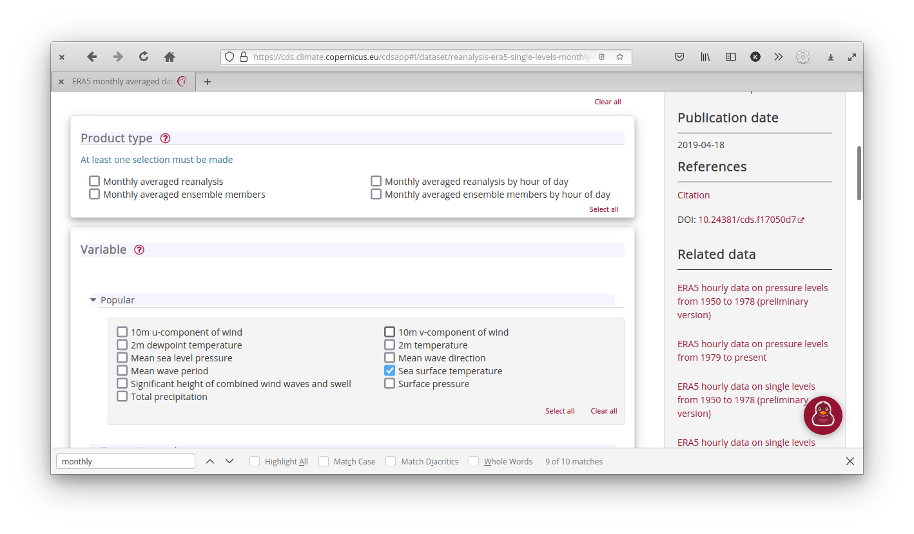
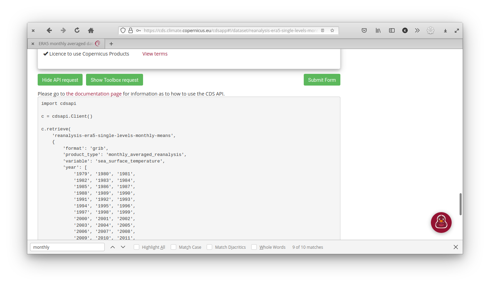
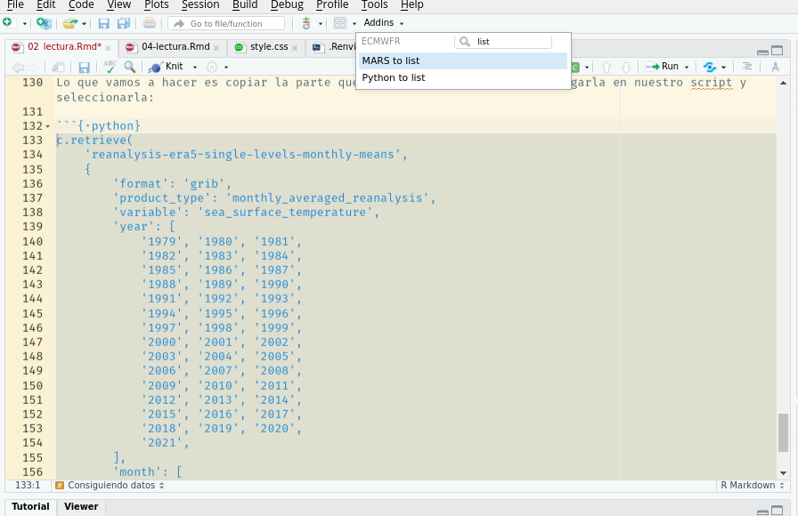
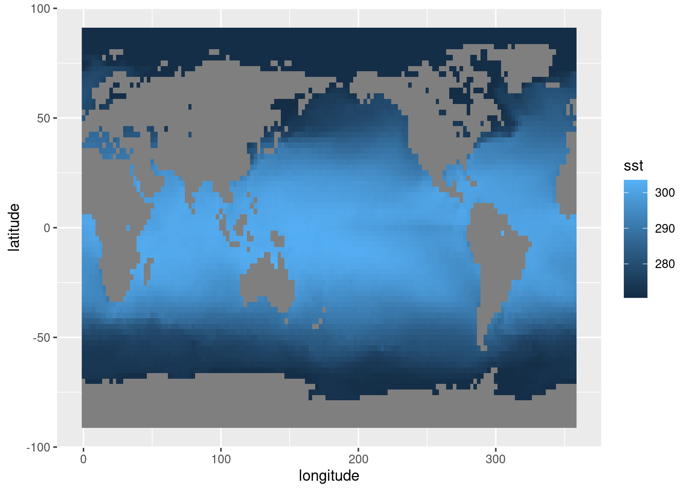
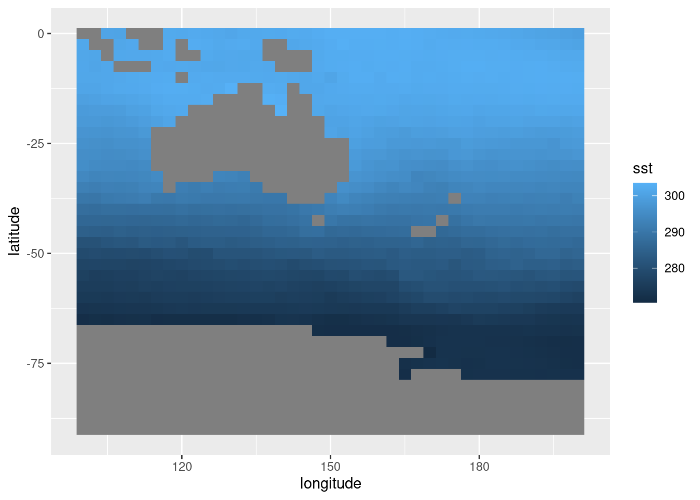

Lectura de datos
Datos en .csv, .txt, etc
Si de casualidad los datos que vas a usar están en un formato de texto o excel, podés usar cualquier función para leerlos que te resulte cómoda. Cómo siempre es importante tener presente el tipo de dato de cada columna, sobre todo si son datos desconocidos. ¿Tiene columnas con latitudes y longitudes? ¿Están en formato decimal o en grados y minutos? ¿R leyó estas columnas como número o texto?
De alguna manera este es un punto en contra para este tipo de formatos, no tienen metadatos asociados o al menos no vienen con el archivo. En la próxima sección presentaremos un tipo de archivo que si cumple con estas cosas.
Datos en netCDF
Uno de estos tipos de formatos muy utilizado en ciencias para guardar datos atmosféricos grillados es el netCDF. La página web de unidata describe al formato netCDF como:
Auto-descriptivo: Un netCDF contiene información sobre los datos que contiene
Portable: Un archivo netCDF puede ser accedido por computadoras que almacenan enteros, caracteres y números de punto flotante de forma diferente.
Escalable: Se puede acceder eficientemente a pequeños subsets de grandes bases de datos, incluso desde servidores remotos.
Anexable: Se pueden añadir nuevos datos pueden añadirse a un archivo netCDF correctamente estructurado sin copiar el conjunto de datos ni redefinir su estructura.
Compartible. Un escritor y varios lectores pueden acceder simultáneamente al mismo archivo netCDF.
Archivable. El acceso a todas las formas anteriores de datos netCDF será compatible con las versiones actuales y futuras del software.
Todo ese márketing lo que significa en la práctica es que los datos en netCDF son muy cómodos porque tienen los metadatos incluídos y porque es muy fácil leer sólo las partes necesarias. Existen muchos paquetes de R para leer (y escribir) archivos en este formato. En este tutorial vamos a usar {metR}.
Los datos en archivos NetCDF puede ser bastante grandes y destruir tu sesión de R si tratás de leerlos enteros en memoria. Por eso, siempre es bueno primero fijarse qué tiene un archivo nuevo. Para eso, {metR} tiene la función GlanceNetCDF que muestra un vistazo de los metadatos del archivo. Vamos a trabajar con un archivo en este formato que contiene datos de reanálisis del NCEP.
library(metR)
# Archivo que viene con metR
archivo <- system.file("extdata", "temperature.nc", package = "metR")
metR::GlanceNetCDF(archivo)## ----- Variables -----
## air:
## mean Daily Air temperature in degK
## Dimensions: lon by lat by level by time
##
##
## ----- Dimensions -----
## time: 1 values from 2010-07-09 to 2010-07-09
## level: 17 values from 10 to 1000 millibar
## lat: 73 values from -90 to 90 degrees_north
## lon: 144 values from 0 to 357.5 degrees_eastLa salida de esta función muestra las variables que tiene el archivo y sus dimensiones.
¿Qué información podés deducir sobre el contenido del archivo a partir de esto?
En este caso, el archivo tiene una sola variable, llamada air que es la temperatura media en Kelvin (un archivo netCDF puede tener muchas variables y no todas en la misma grilla). De las dimensiones del archivo, se ve que tiene dimensiones de tiempo, nivel, longitud y latitud. La latitud va de -90 a 90 y la longitud de 0 a 357.5, por lo que es un campo global. level es la coordenada vertical, que va de 1000 milibares (básicamente la superficie) a 10 millibares (la estratósfera media).
Podemos hacer la cuenta de cuántas observaciones tiene este archivo:
1*17*73*144## [1] 178704Que puede leerse sin problema.
Para leer los datos, se usa ReadNetCDF().
temperatura <- ReadNetCDF(archivo)
temperatura## time level lat lon air
## 1: 2010-07-09 1000 90 0.0 274.87
## 2: 2010-07-09 1000 90 2.5 274.87
## 3: 2010-07-09 1000 90 5.0 274.87
## 4: 2010-07-09 1000 90 7.5 274.87
## 5: 2010-07-09 1000 90 10.0 274.87
## ---
## 178700: 2010-07-09 10 -90 347.5 188.25
## 178701: 2010-07-09 10 -90 350.0 188.25
## 178702: 2010-07-09 10 -90 352.5 188.25
## 178703: 2010-07-09 10 -90 355.0 188.25
## 178704: 2010-07-09 10 -90 357.5 188.25Consiguiendo datos
Ok, pero estos datos son una muestra gratis, ¿cómo hacemos para conseguir más datos? Hoy vamos a usar una plataforma maravillosa para acceder a una enorme cantidad de datos climáticos y meteorológicos: el Climate Data Store.
Página principal de Cliamte Data Store que dice: Welcome to the Climate Data Store. Dive into this wealth of information about the Earth’s past, present and future climate.
En la parte preparatoria ya te creaste una cuenta y seteaste R para pedir datos (y si no, es un buen momento para hacerlo). Si hacés click en Datasets vas a ver todas las bases de datos disponibles.
Sección de Datasets de Climate Data Store
Es posible que la mayoría no te suene ni de nombre, y la verdad que a mí tampoco. Como ejemplo entonces vamos a descargar datos de ERA5, el Reanálisis del Centro Europeo de Previsiones Meteorológicas a Plazo Medio.
¿Qué es un reanálisis? Los reanálisis combinan previsiones meteorológicas a corto plazo con observaciones mediante la asimilación de datos. Es una mezcla de observaciones y resultados de modelos meteorológicos que es físicamente consistente y en una grilla regular global. (Más acá)
En particular, vamos a usar los datos mensuales 2D entre desde 1979 y vamos a descargar datos de temperatura de la superficie del mar (Sea Surface Temperature en inglés).
Para descargar los datos de manera programática y reproducible, vamos a usar el paquete de R ecmwfr. Lo primero que necesitamos es un ‘request’ válido. Podemos escribirlo a mano pero es mucho más fácil y menos sujeto a errores si lo nos ayudamos con la página de CDS.
Lo primero que hay que hacer es ir a la página y seleccionar los datos y el período que queremos:

En este caso:
Product type: Monthly averaged reanalysis
Variable: Mean sea level pressure, Total precipitation y 2m temperature
Year: Todos menos 2021.
Month: “select all”
Time: 00:00 (como son datos mensuales, no tienen tiempo en realidad)
Geographical area: Whole available region
Format: NetCDF
Con esto por√≠amos hacer click en ‚ÄúSubmit Form‚Äù y descargar los datos manualmente, pero vamos a hacer click en ‚ÄúShow API request‚Äù, lo que nos va a mostrar un c√≥digo (de PYTHON üò±!) que descarga los datos.

Lo que vamos a hacer es copiar la parte que empieza con c.retrieve(, pegarla en nuestro script y seleccionarla:
c.retrieve(
'reanalysis-era5-single-levels-monthly-means',
{
'format': 'netcdf',
'product_type': 'monthly_averaged_reanalysis',
'variable': [
'mean_sea_level_pressure', 'sea_surface_temperature', 'total_precipitation',
],
'year': [
'1979', '1980', '1981',
'1982', '1983', '1984',
'1985', '1986', '1987',
'1988', '1989', '1990',
'1991', '1992', '1993',
'1994', '1995', '1996',
'1997', '1998', '1999',
'2000', '2001', '2002',
'2003', '2004', '2005',
'2006', '2007', '2008',
'2009', '2010', '2011',
'2012', '2013', '2014',
'2015', '2016', '2017',
'2018', '2019', '2020',
],
'month': [
'01', '02', '03',
'04', '05', '06',
'07', '08', '09',
'10', '11', '12',
],
'time': '00:00',
},
'download.nc')Finalmente, hacer click en Addins y luego en Python to list

Automágicamente todo ese código del malvado Python se va a convertir en una lista de R que es un request válido para bajar los datos:
request <- list(
format = "netcdf",
product_type = "monthly_averaged_reanalysis",
variable = c("mean_sea_level_pressure", "sea_surface_temperature", "total_precipitation"),
year = c("1979", "1980", "1981", "1982", "1983", "1984", "1985", "1986", "1987", "1988", "1989", "1990", "1991", "1992", "1993", "1994", "1995", "1996", "1997", "1998", "1999", "2000", "2001", "2002", "2003", "2004", "2005", "2006", "2007", "2008", "2009", "2010", "2011", "2012", "2013", "2014", "2015", "2016", "2017", "2018", "2019", "2020"),
month = c("01", "02", "03", "04", "05", "06", "07", "08", "09", "10", "11", "12"),
time = "00:00",
dataset_short_name = "reanalysis-era5-single-levels-monthly-means",
target = "download.nc"
)Esto se puede usar así como está pero hay dos cosas que conviene cambiar.
Primero, el campo “target” tiene el nombre del archivo final que por defecto es un genérico
"download.nc". Mejor cambiarlo por algo descriptivo como"temperatura_mar.nc". Luego, la resolución de este campo es de 0.5x0.5 grados, que para ver patrones globales de gran escala es mucho más que lo necesario.Segundo, para tener un archivo mucho más liviano y fácil de manejar, podemos reducir esa resolución a algo como 2.5x2.5 agregando el campo “grid” y seteándolo a `“2.5/2.5”. Mirando el formato del request, pueden imaginarse que cambios hacer si quieren bajar menos años, o sólo algunos meses, etc…
request <- list(
format = "netcdf",
product_type = "monthly_averaged_reanalysis",
variable = c("mean_sea_level_pressure", "sea_surface_temperature", "total_precipitation"),
year = c("1979", "1980", "1981", "1982", "1983", "1984", "1985", "1986", "1987", "1988", "1989", "1990", "1991", "1992", "1993", "1994", "1995", "1996", "1997", "1998", "1999", "2000", "2001", "2002", "2003", "2004", "2005", "2006", "2007", "2008", "2009", "2010", "2011", "2012", "2013", "2014", "2015", "2016", "2017", "2018", "2019", "2020"),
month = c("01", "02", "03", "04", "05", "06", "07", "08", "09", "10", "11", "12"),
time = "00:00",
dataset_short_name = "reanalysis-era5-single-levels-monthly-means",
grid = "2.5/2.5", # Bajar datos en menor resolución que la default
target = "temperatura_mar.nc" # Cambiar el nombre de archivo.
)Una vez que tenemos el request bien formateado, finalmente es momento de descargar los datos. Esto se hace con la función wf_request(), a la que también le tenemos que decir en qué carpeta guardar el archivo.
archivo <- ecmwfr::wf_request(request, path = "datos")Esto va a empezar a correr y vas a ver esto:
Requesting data to the cds service with username xxxxxx
- staging data transfer at url endpoint or request id:
xxxxx-xxxxx-xxxxx-xxxxx-xxxxxxx
- timeout set to 1.0 hours
\ polling server for a data transferEso significa que R ya le hizo el pedido de datos a CDS, el cual lo va a procesar. wf_request() va a esperar hasta 1 hora hasta que se complete el pedido de datos (para pedidos muy grandes eso se puede cambiar con el argumento time_out).
Podés ver tus pedidos de datos en la sección “Your requests” del CDS.
Cuando los datos estén listos, vas a ver una barrita de proceso y cuando ésta llegue al 100%, este mensaje:
- moved temporary file to -> datos/temperatura_mar.nc
- request purged from queue!Y listo! Los datos ahora están en datos/temperatura_mar.nc.
Veamos que todo está bien haciendo un glance al archivo:
GlanceNetCDF(archivo)## ----- Variables -----
## msl:
## Mean sea level pressure in Pa
## Dimensions: longitude by latitude by time
## (Scaled)
## sst:
## Sea surface temperature in K
## Dimensions: longitude by latitude by time
## (Scaled)
## tp:
## Total precipitation in m
## Dimensions: longitude by latitude by time
## (Scaled)
##
##
## ----- Dimensions -----
## longitude: 144 values from 0 to 357.5 degrees_east
## latitude: 73 values from -90 to 90 degrees_north
## time: 504 values from 1979-01-01 to 2020-12-01Leyendo variables
Y ahora podemos leer sin problemas. ReadNetCDF() por default trata de leer todas las variables, una en cada columna. Eso no siempre es posible o deseable, porque distintas variables pueden tener distintas dimensiones; como por ejemplo, si hay variables definidias en 2D mezcladas con variables definidas en 3D. Entonces lo que se puede hacer es elegir qué variables leer con el argumento vars.
Leamos primero la temperatura de la superficie del mar:
sst <- ReadNetCDF(archivo, vars = "sst")
head(sst)## time latitude longitude sst
## 1: 1979-01-01 90 0.0 271.4601
## 2: 1979-01-01 90 2.5 271.4601
## 3: 1979-01-01 90 5.0 271.4601
## 4: 1979-01-01 90 7.5 271.4601
## 5: 1979-01-01 90 10.0 271.4601
## 6: 1979-01-01 90 12.5 271.4601Lo primero que a mí me gusta hacer cuando leo los datos es mirar el primer campo o un par de campos. Va a haber más sobre los detalles para visualizar estos datos con ggplot2 más adelante, pero por ahora usemos el viejo y confiable geom_raster().
# Además, cargo los paquetes necesarios
library(magrittr)
library(ggplot2)
library(dplyr)
library(data.table)data.table
sst %>%
.[time == time[1]] %>%
ggplot(aes(longitude, latitude)) +
geom_raster(aes(fill = sst)) 
dplyr
sst %>%
filter(time == time[1]) %>%
ggplot(aes(longitude, latitude)) +
geom_raster(aes(fill = sst)) 
En este gráfico ya se ven varias cosas. Se ve que hay una clara estructura de mayores temperaturas cerca del ecuador, lo cual no debería sorprender a nadie. También se ve que, como lo que estamos leyendo es la temperatura de la superficie del mar, tenemos datos faltantes sobre los continentes. Esto puede molestar un poco para algunas operaciones, ¡pero nos viene bárbaro para tener el contorno de los continentes gratis! Finalmente, notar que como las longitudes van de 0º a 360º (en vez de -180º a 180º), el mapa sale centrado en el Océano Pacífico. Esto va a haber que tenerlo en cuenta cuando sea la hora de graficar los continentes con algo mejor que bloques grises.
Leyendo regiones
Es muy común tener muchos datos en unos pocos archivos netCDF pero necesitar sólo una parte. Por ejemplo, me voy a poner en los zapatos de un investigador neozelandés que le interese estudiar la temperatura de la superficie del mar cerca de Nueva Zelanda y sus islas cercanas. En este caso, podría leer sólo una región acotada usando el argumento subset :
ReadNetCDF(archivo, vars = "sst",
subset = list(longitude = c(100, 200),
latitude = c(0, -90))) %>%
.[time == time[1]] %>%
ggplot(aes(longitude, latitude)) +
geom_raster(aes(fill = sst)) 
El argumento subset tiene que ser una lista cuyos elementos tienen los nombres de las dimensiones a usar para filtrar y cada elemento es un vector cuyo rango define el bloque de datos a leer.
En el código anterior subset es:
list(longitude = c(100, 200),
latitude = c(0, -90))Lo que significa que se van a leer los datos con latitud entre -90º y 0º, y con longitud entre 100º y 200º.
El argumento subset de ReadNetCDF() tiene otros aces bajo la manga, como usar NA para referirse al mínimo o al máximo valor posible en un rango a la hora de hacer un subset o leer regiones discontinuas de datos. Todo eso se puede leer en la ayuda: ?ReadNetCDF().